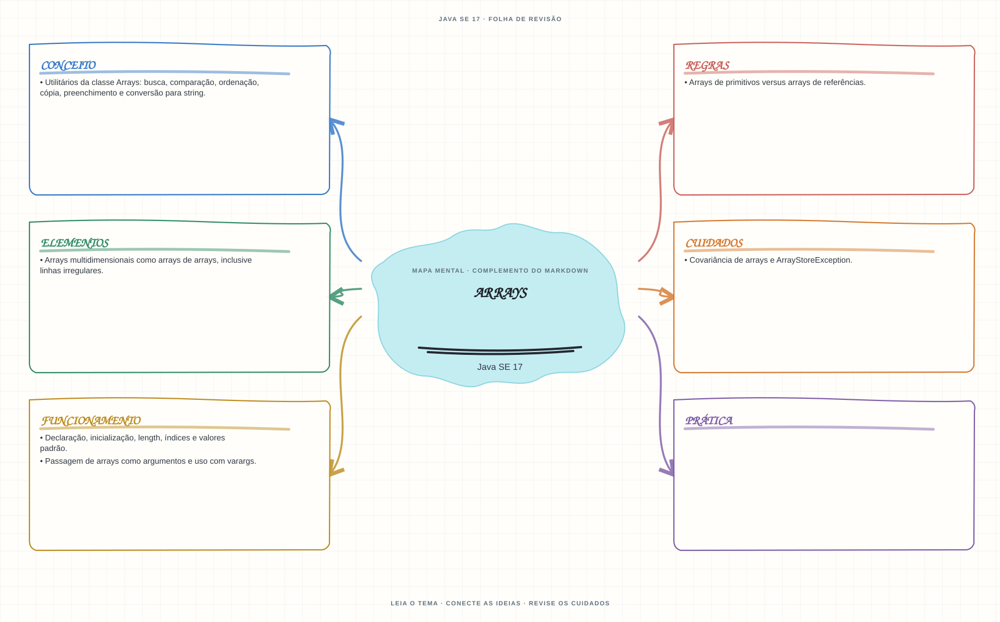

Ver mapa mental deste assuntoDistinguir arrays de primitivos e de referências, índices, covariância e utilitários de busca/ordenação.
Primeiro contato: aprenda o conceito e pratique antes de consultar os detalhes de prova. Voltar aos fundamentos se algum termo ainda for novo.
- Leia o objetivo e localize a ideia principal no conteúdo abaixo.
- Preveja o resultado, compile e execute o exemplo.
- Faça a atividade sem copiar a solução e confira a checagem comentada.
EXEMPLO DE CONSOLE
Veja a regra em execução
Antes de executar, anote sua previsão. Compile o exemplo com o JDK e compare a saída observada com as regras deste assunto.
Comandos para compilar e executar
javac -d target/bin src/05-arrays-e-colecoes/arrays/ArraysExample.java
java -cp target/bin ArraysExampleA execução imprime o resultado no console para você comparar com sua previsão.
Consultar código-fonte: ArraysExample.java
import java.util.Arrays;
public class ArraysExample {
public static void main(String[] args) {
System.out.println("=== Arrays ===");
System.out.println("Um array tem tamanho fixo e recebe valores padrao ao ser criado.");
int[] notas = {8, 10, 7};
int[] valoresPadrao = new int[3];
int[][] matrizIrregular = {{1, 2}, {3}};
Arrays.sort(notas);
System.out.println("Tamanho do array (propriedade length): " + notas.length);
System.out.println("Elementos apos a ordenacao: " + Arrays.toString(notas));
System.out.println("Novo int[] inicia com zeros: " + Arrays.toString(valoresPadrao));
System.out.println("Matriz e array de arrays; segunda linha tem tamanho "
+ matrizIrregular[1].length + ".");
System.out.println("Busca binaria da nota 8 (array ordenado): "
+ Arrays.binarySearch(notas, 8));
}
}
PRATIQUE AGORA
Faça uma pequena alteração por conta própria
Armazene cinco notas em um array, calcule a média e imprima o maior valor.
Concluído quando: o programa compilar, produzir o resultado esperado e você conseguir explicar a regra aplicada.
CHECAGEM RÁPIDA · Arrays
Por que Arrays.binarySearch pode retornar um resultado incorreto se o array não estiver ordenado?
Conferir resposta comentada
A busca binária pressupõe dados ordenados segundo a mesma ordem usada na busca; sem esse requisito, o resultado não é confiável.
Estude
- Declaração, inicialização,
length, índices e valores padrão. - Arrays multidimensionais como arrays de arrays, inclusive linhas irregulares.
- Arrays de primitivos versus arrays de referências.
- Covariância de arrays e
ArrayStoreException. - Passagem de arrays como argumentos e uso com varargs.
- Utilitários da classe
Arrays: busca, comparação, ordenação, cópia, preenchimento e conversão para string.
Prática
Compare arrays com ==, equals e Arrays.equals; teste ordenação e busca binária com os pré-requisitos corretos.
Como este capítulo se relaciona com cada exame
Fundamentos reaproveitáveis; confira versão e APIs cobradas em Java 8.
Base de estudo deste portal; confirme o mapeamento com o blueprint vigente.
Conceitos úteis; revise também Sequenced Collections no Java 21.
Orientação editorial sobre reaproveitamento do material; não representa objetivos oficiais nem garante cobertura do exame. Consulte o comparativo e as fontes da Oracle.